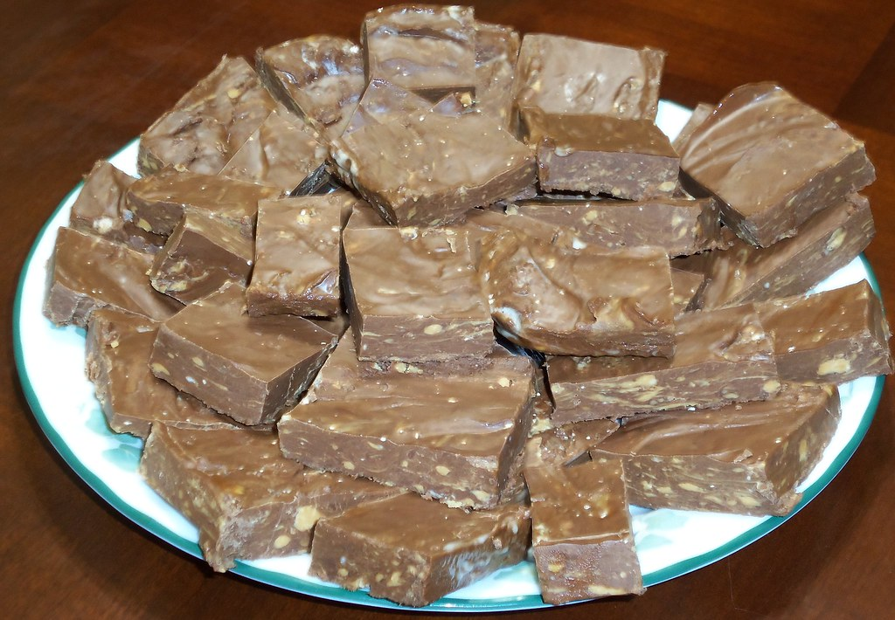

Peanutbutter Fudge Recipe

Description
Is it peanuts? Is it butter? Is it fudge? Well sort of yeah.
recipe lifted from BBC Food here
Ingredients
- 125g/4½oz butter
- 500g/1lb 2oz dark brown sugar
- 120ml/4fl oz milk
- 250g/9oz crunchy peanut butter
- 1 vanilla pod, seeds only
- 300g/10½oz icing sugar
Steps
Do this:
- Melt the butter in a saucepan over a medium heat.
- Stir in the brown sugar and milk, and bring to the boil for 2-3 minutes, without stirring.
- Remove from the heat, and stir in the peanut butter and vanilla seeds.
- Place the icing sugar in a large bowl, and pour the hot butter and sugar mixture on top. Using a wooden spoon, beat the mixture until smooth.
- Pour into a 20cm/8in square baking tray, and set aside to cool slightly, then place in the fridge to chill completely.
- Cut the fudge into squares with a sharp knife, turn out of the tin and store in an airtight container.
Home